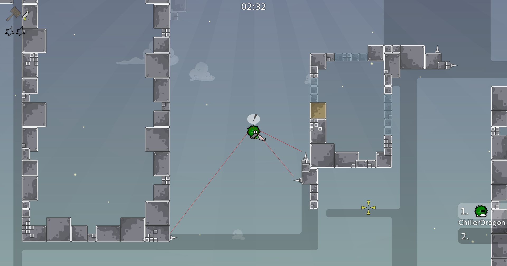
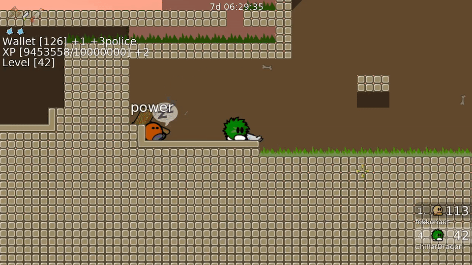

chillerbot-ux
A ddnet based client with additional features:
-
Chat based war list to color names red and green
!war (name)!peace (name)!team (name)!delteam (name) There is also an advanced war list mode. Not recommended for beginners because it is a bit complicated to fully understand.
It allows you to bundle up multiple names together as one war entry that then can be peaced and declared war with one command.
It allows you to mark all players as enemies that have some clan prefix in their name or based on the clantag.
It allows you to add a reason to a warlist entry which you can display over the tees in game and use in the auto reply chat bot when someone asks why you block them.
There is also an advanced war list mode. Not recommended for beginners because it is a bit complicated to fully understand.
It allows you to bundle up multiple names together as one war entry that then can be peaced and declared war with one command.
It allows you to mark all players as enemies that have some clan prefix in their name or based on the clantag.
It allows you to add a reason to a warlist entry which you can display over the tees in game and use in the auto reply chat bot when someone asks why you block them.
-
Show lines to the closes kill tiles using
cl_spike_tracer i[radius]. Socl_spike_tracer 100draws lines from your tee to all the kill tiles that are less than 100 tiles away. Andcl_spike_tracer_walls 1finds kill tiles even if they are behind walls.  -
In F-DDrace block servers you can use
auto_drop_moneyto automatically drop all your money from your wallet. This can be used to avoid getting afk spiked for money.  -
With
cl_change_tile_notification 1you get a desktop notification when the tile your tee is on changes. This can be useful when you are waiting for help in freeze in a ddrace or gores map. As soon as someone comes and moves you out you get notified. Or it can be used to check that nobody removed you from your farm chair in a city mod. -
cl_no_particles 1does not render damage indicators, spawn and death effects anymore. This can cleanup your viewport and improve fps. Especially in ddrace servers where every gun hit spawns a lot of damage indicators. Or servers that have a bloody effect. - Password manager (requires manually editing a text file)
- Auto reply to common pings in chat
bind h reply_to_last_ping - Change username before touching the finish line
cl_finish_rename - You can automatically switch to the skin of players close to you using
cl_skin_stealer 1 - Run console commands when a vote is called. Can be used to run
say /save codein ddnet before the map gets changedcl_run_on_vote_start
For more info and releases visit GitHub.
Download v008
Get the source